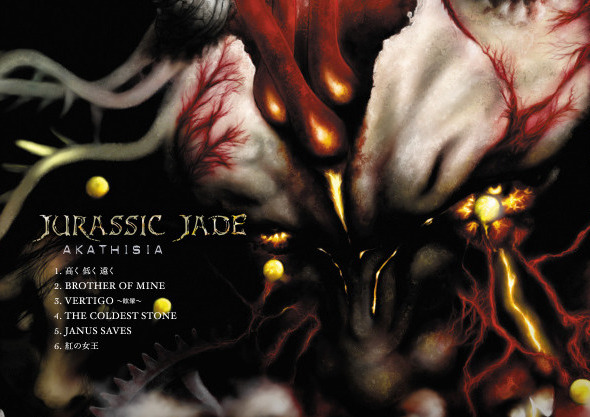
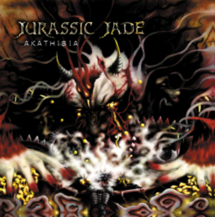

|
1.高く 低く 遠く |
| 2.BROTHER OF MINE Music: NOB, GEORGE, HAYA, HIZUMI/Lyrics: HIZUMI A Rock, I was, Where he stood the highest mountain in his yard Knocking I want, he was waiting, Waiting for our coming in his yard Lost boy いつまで固まってる いつまでしゃがんで 下界覗き込んでるんだ Lost boy 刻んだ石の顔 七代遡って 同じ顔してるお前と COGITO COGITO そこに居るか 一人で旅立つ弟よ 首の傷は癒えたのか 海風は寒くなかったか Lost boy いつまでしゃぶってる いつまで怯えて 震えてくわえてるんだ Lost boy 失くした指の骨 爪の先の形まで 兄貴とお揃いだ GUILTO GUILTO 聞こえるか 寂しい一人の弟よ 七度春風吹かせたら 私も旅に出掛けよう あの子は 家の子? それとも 他所の子? If I were a bird, I could fly to my home |
|
3.VERTIGO〜眩暈〜 Music: NOB, GEORGE, HAYA, HIZUMI/Lyrics: HIZUMI VERTIGO I’d passed the past time VERTIGO めくる めぐる Ring The acid carries GENETIC info たしかに手渡しておいたはずだが The acid carries GENETIC info たしかに手渡されたはずだが VERTIGO I’d passed the past rale VERTIGO のらり ゆらり 螺旋 だいぶ無理したネ 途絶えてしまう 数えちがいしたネ 間に合うはずだ だいぶ無理したネ もう欠け始めている 数えちがいしたネ 足せばふえてゆくと 被害者が見る 加害者の夢 加害者が見る 被害者の夢 天国で飼う 地獄の犬 地獄で飼う 天国の犬 VERTIGO I’d passed the permanent VERTIGO 二重拘束 そんなものが いるかどうか 始めから 終わりめざして そんなものが いたかどうか 終わると 始まり 探した |
| 4.THE COLDEST STONE Music: NOB, GEORGE, HAYA, HIZUMI/Lyrics: HIZUMI A warm ill-boarding wind swept past in a moment Tidy up your toy, boy, before you go to bed Tinny bubbles torn boy, before you get the gun The cold, the coldest stone in mortmain Broke my heart, froze my blood & brother The sword, the hardest sword with dirty hand Broke your heart, froze your blood & brother The movement obtain all out, support from the public The needy, the greedy never satisfied Ain’t mortified Disobedience to the master Morale was dead in the platoon The coldest stone stands side by side The coldest stone in the graveyard |
| 5.JANUS SAVES Music: NOB, GEORGE, HAYA, HIZUMI/Lyrics: HIZUMI 死ぬより永い Oh 苦しみが あるとは知らず 生まれてくる者を Janus saves the mirror 目を背けた Venus saves the winner 祝いのバクダン Overkill to terminate Formidable to dominate Janus saves the mirror 体中に巻いた Venus saves the winner 白い花嫁 Can you kiss your mother land and earth? Can you kiss your murder’s ass hole? Fade away, a baby-cry, a baby’s smiling face Janus saves the mirror 届けに行くよ Venus saves the winner 血塗られた投げキッス I like a fist, least of all I like a priest, least of all |
| 6.紅の女王 Music: NOB, GEORGE, HAYA, HIZUMI/Lyrics: HIZUMI She would stop beating my sister Crimson Queen promised me, She would stop beating my sister Results were against me, against my expectations She held a picture upside down She wears a sweater wrong side out Crimson Queen promised me, She would stop beating my sister あの女が放った言葉が 私を突き刺す 尖った先がピックになって 突き刺さる 赤い兆しがはじけて 過去を連れ戻す 黒い獣が 私の中で暴れだす Keep your dog in leash, please, let sleeping the lie Keep your secret treaty, let sleeping the die あの女が笑った顔を 映し出す 尖った先が内に向かって 走りだす 赤い兆しがはじけて 過去を巻き戻す 黒い獣が 私の中で暴れだす 本当のことが聞きたい 本当のことが知りたい 本当のことが言いたい 本当のことが言えない |
 |
| (C)BxTxH RECORDS 2010 |
| BACK TO |